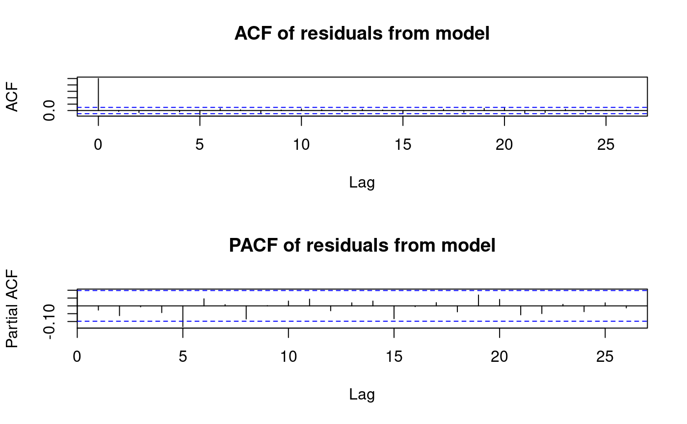
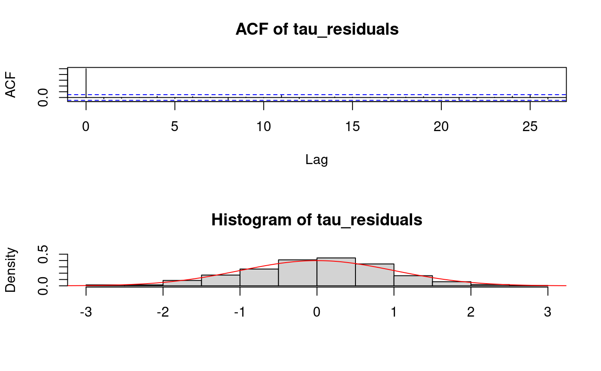

Diagnostic checks for mixture autoregressive models
mixAR_diag.RdPerform diagnostic checks and tests on given MixARGaussian
object with respect to a given time series.
# S3 method for MixARGaussian tsdiag(object, gof.lag, y, ask = interactive(), ...) mixAR_diag(model, y, ask = interactive())
Arguments
| model,object | the model on which to perform the checks, an object from class
|
|---|---|
| gof.lag | how many lags to compute for acf and pacf? The default is as that of
|
| y | A time series, currently a |
| ask | if |
| ... | currently not used. |
Details
It is recommended to use tsdiag. mixAR_diag is
essentially deprecated and is still here for compatibility with old
code. Moreover, the tsdiag method is more flexible. The only
advantage of mixAR_diag is that it accepts also a list for
argument model but this is equivalent to calling tsdiag
with object = model$model.
The function calculates two types of residuals. The first set calculates residuals as of canonical definition. ACF and Partial ACF plots are given.
Transformations on the data are performed, as described in Smith (1985).
The following tests are available:
is applied to residuals, checking for residual correlation
up to lag 20.
is applied to U to assess the hypothesis of uniform
distribution.
is applied to V, where
V = qnorm(U).
The second set is calculated as the component specific residual
e_tk divided by its corresponding scale sigma_k,
according to under which component y_t has largest density. Under
correct model specification, these should be jointly
Normal. Shapiro-Wilk test is performed on this set of residual to
assess the hypothesis.
Value
the first set of residuals,
CDF of the one step ahead predictors of y_t,
set of transformed U by use of qnorm,
The second set of residuals, as described,
a list containing the results of the tests deescribed in Details.
References
Smith JQ (1985). “Diagnostic checks of non-standard time series models.” Journal of Forecasting, 4(3), 283-291. doi: 10.1002/for.3980040305 , https://onlinelibrary.wiley.com/doi/pdf/10.1002/for.3980040305, https://onlinelibrary.wiley.com/doi/abs/10.1002/for.3980040305.
Wong CS, Li WK (2000). “On a mixture autoregressive model.” J. R. Stat. Soc., Ser. B, Stat. Methodol. , 62(1), 95-115.
Note
This function should be used for diagnostic checking of MixARGaussian
objects only.
See also
Examples
model1 <- new("MixARGaussian", prob = c(0.5, 0.5), scale = c(1, 2), arcoef = list(-0.5, 1.1)) set.seed(123) y <- mixAR_sim(model1, 400, c(0,0,0), nskip = 100) fit1 <- fit_mixAR(y, model1) mixAR_diag(fit1, y)